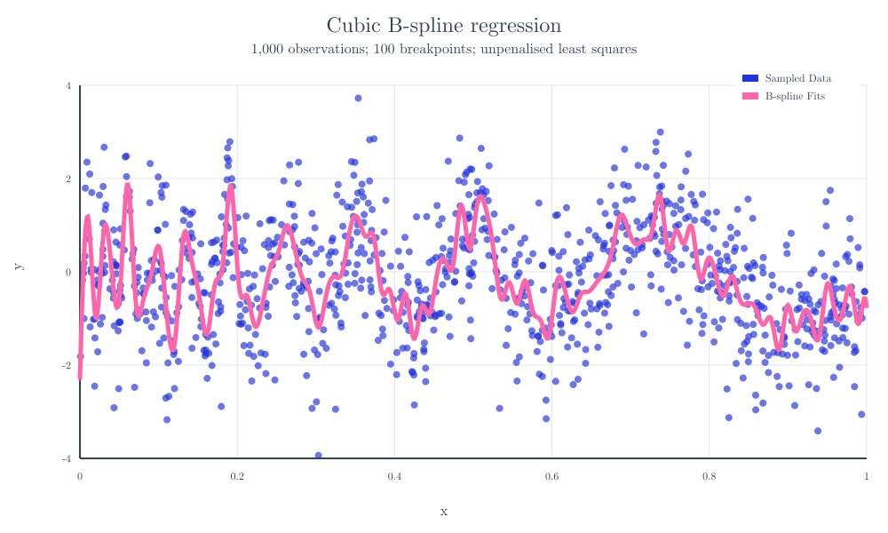

B-spline regression
Choose a language tab for each example. Code and its results stay together. Run
each tab independently. Python uses the local package in
build/venv/pydatamunge-run; R uses build/r/library. Build these once with
just build-python and just build-r, and rebuild after binding changes.
B-spline regression
Fit a cubic B-spline basis to noisy observations. This is least-squares
regression: the fitted curve need not pass through each observation.
bs(lower, upper, knots) returns an owned Bspline for training and
prediction; its default omits the first basis column so LM can add an
intercept. The 100 breakpoints include both endpoints and produce 101 predictor
columns. speval() creates the design directly in CSR storage. lm(y, X)
returns an owned LM and adds an intercept by default and chooses dense QR or
sparse PCG from the matrix storage; matrix prediction uses the same predictor
order and adds the intercept itself. The Doppler function accepts the whole
vector: its arithmetic, sine and noise addition form a lazy expression. The
forwarding parameter keeps named vectors borrowed and temporary vectors owned.
rnorm() draws once when the expression is formed; model fitting and plotting
evaluate using those same noise values. Use y.eval() or dm::Vector<> y = ...
to keep a computed snapshot. apply() remains an eager mapping operation for
arbitrary scalar callbacks. Sparse fitting retains compressed designs, while
inference uses dense coefficient-sized covariance matrices. The sparse solver
uses normal equations, which square the design's condition number. With so many
unpenalised coefficients, the curve can follow noise as well as signal.
dm::plot() starts an empty plot, and .xlim() / .ylim() set the axis ranges
while retaining fluent chaining. The block selects the C++ Nix shell through an
explicit local Git reference so mep uses matching installed headers and library.
Line colors accept literals or std::string hex RGBA text; the final byte is
opacity divided by 255.
All three tabs seed the native generator with 42 and use the same 100
breakpoints. C++ demonstrates an explicit sparse design and LM; Python and R
use the bound BSplineRegression convenience API for the same least-squares
spline space. Each tab saves its own plot.
#include <dm/dm.hpp>
int main() {
dm::set_seed(42);
const auto n = 1000, nx = 1000, ks = 100;
const auto doppler = [](auto &&x) {
return dm::sin(20 / (std::forward<decltype(x)>(x) + 0.25));
};
const auto x = dm::runif(0, 1, n);
const auto y = doppler(x) + dm::rnorm(0, 1, n);
const auto k = dm::seql(0, 1, ks);
const auto basis = dm::bs(0, 1, k);
const auto xmat = basis.speval(x);
const auto lm1 = dm::lm(y, xmat);
const auto seqx = dm::seql(0, 1, nx);
const auto yhat = lm1.predict(basis.speval(seqx));
const auto plt =
dm::plot().title("Cubic B-spline regression").subtitle(
"1,000 observations; 100 breakpoints; unpenalised least squares").points(x, y, "Sampled Data", "#2233ddaa").lines(seqx, yhat, "B-spline Fits", "#ff66aa", 5.).ylim(-4., 4.).xlim(0., 1.).x_label("x").y_label("y").size(1000, 600);
dm::mkdir("build/figs");
plt.save("build/figs/bspline_fit.svg");
}
BSplineRegression fits the same cubic spline space directly from vectors and
breakpoints. Plotting also uses the native library.
import math
from pathlib import Path
from pydatamunge import datamunge as dm
dm.set_seed(42)
x = list(dm.runif(0, 1, 1000))
noise = list(dm.rnorm(0, 1, 1000))
y = [math.sin(20 / (value + 0.25)) + error for value, error in zip(x, noise)]
knots = dm.seql(0, 1, 100)
model = dm.BSplineRegression(x, y, knots, 3)
seqx = list(dm.seql(0, 1, 1000))
yhat = list(model.predict(seqx))
plot = dm.RPlot.create()
plot.points(x, y, "Sampled Data", dm.RGB("#2233ddaa"))
plot.lines(seqx, yhat, "B-spline Fits", dm.RGB("#ff66aa"), 5.0)
plot.set_title("Cubic B-spline regression")
plot.set_subtitle(
"1,000 observations; 100 breakpoints; unpenalised least squares"
)
plot.xlim(0, 1)
plot.ylim(-4, 4)
plot.set_xlab("x")
plot.set_ylab("y")
plot.size(1000, 600)
Path("build/figs").mkdir(parents=True, exist_ok=True)
plot.save_svg("build/figs/bspline_fit_python.svg")BSplineRegression$new() fits the same spline space. native_rnorm(mean, sd, n)
uses the shared C++ generator; stats::rnorm(n, mean, sd) remains available.
suppressPackageStartupMessages(library(datamunger))
invisible(set_seed(42L))
x <- as.numeric(unif(0, 1, 1000L))
noise <- as.numeric(native_rnorm(0, 1, 1000L))
y <- sin(20 / (x + 0.25)) + noise
knots <- as.numeric(seql(0, 1, 100L))
model <- BSplineRegression$new(x, y, knots, 3L)
seqx <- as.numeric(seql(0, 1, 1000L))
yhat <- as.numeric(model$predict(seqx))
plot <- RPlot$new()
invisible(plot$points(x, y, "Sampled Data", RGB$new(34, 51, 221, 2 / 3)))
invisible(plot$lines(seqx, yhat, "B-spline Fits", RGB$new(255, 102, 170), 5))
invisible(plot$set_title("Cubic B-spline regression"))
invisible(
plot$set_subtitle(
"1,000 observations; 100 breakpoints; unpenalised least squares"
)
)
invisible(plot$xlim(0, 1))
invisible(plot$ylim(-4, 4))
invisible(plot$set_xlab("x"))
invisible(plot$set_ylab("y"))
invisible(plot$size(1000L, 600L))
dir.create("build/figs", recursive = TRUE, showWarnings = FALSE)
invisible(plot$save("build/figs/bspline_fit_r.svg"))figures/bspline_fit_r.svg